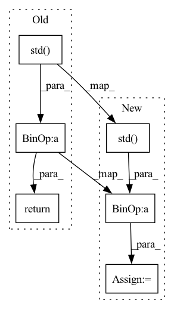

Pattern ID :14559
Before Change
wav = np.frombuffer(wav.readframes(wav.getnframes()), dtype="int16")
wav = wav.astype("float")
if normalize:
return (wav - wav.mean()) / wav.std()
else:
return wav
After Change
wav = np.frombuffer(wav.readframes(wav.getnframes()), dtype="int16")
wav = wav.astype("float")
if normalize:
wav = (wav - wav.mean()) / wav.std()
return wav
// 把音频数据执行短时傅里叶变换In pattern: SUPERPATTERN
Frequency: 4
Non-data size: 6
Instances Fragment ID: 47909019
Project Name: yeyupiaoling/masr
Commit Name: 27f1abc2c281cd4e55e6607acdea9d8123d463b2
Time: 2020-12-02
Author: yeyupiaoling@foxmail.com
File Name: utils/data.py
M Class Name: AnonimousClass
N Class Name: AnonimousClass
M Method Name: load_audio(2)
N Method Name: load_audio(2)
M Parent Class:
N Parent Class:
M File Name: utils/data.py
N File Name: utils/data.py
M Start Line: 22
M End Line: 24
N Start Line: 23
N End Line: 24
Before Change
This function is supposed to be given to raw.apply_function().
continuous_data = continuous_data - continuous_data.mean(axis=-1)
return continuous_data / continuous_data.std(axis=-1)
After Change
given to raw.apply_function().
zscored = data - np.mean(data, keepdims=True, axis=-1)
zscored = zscored / np.std( zscored, keepdims=True, axis=-1)
// TODO: the overriding of protected "_data" should be implemented in the
// TODO: dataset when transforms are applied to windows
if hasattr(data, "_data"):
data._data = zscored
return zscored
Fragment ID: 47909018
Project Name: braindecode/braindecode
Commit Name: 20ed845e5d7b0758c0145180205108fd682be98b
Time: 2020-02-18
Author: l.gemein@googlemail.com
File Name: braindecode/datautil/transforms.py
M Class Name: AnonimousClass
N Class Name: AnonimousClass
M Method Name: zscore(1)
N Method Name: zscore(1)
M Parent Class:
N Parent Class:
M File Name: braindecode/datautil/transforms.py
N File Name: braindecode/datautil/transforms.py
M Start Line: 93
M End Line: 94
N Start Line: 98
N End Line: 104
Before Change
:param frame: image
:return: normalized_frame
"""
return frame / np.std( frame)
def preprocess_Image(prev_frame, crop_frame):
After Change
:return: normalized_frame
"""
if frame is not np.all(frame == 0):
frame = frame / np.std( frame)
return frame
Fragment ID: 47909024
Project Name: tvs-ai/pytorch_rppgs
Commit Name: 449ce1fea1b0d6f6378b458ea0bde81832cbf942
Time: 2022-10-05
Author: kwelcomm@gmail.com
File Name: utils/image_preprocess.py
M Class Name: AnonimousClass
N Class Name: AnonimousClass
M Method Name: normalize_Image(1)
N Method Name: normalize_Image(1)
M Parent Class:
N Parent Class:
M File Name: utils/image_preprocess.py
N File Name: utils/image_preprocess.py
M Start Line: 304
M End Line: 304
N Start Line: 304
N End Line: 306
Before Change
def _standardize_channel(self, channel_data):
Sample-wise standardization y* = (y-y_mean)/y_std
mean = channel_data.mean()
std = channel_data.std()
return (channel_data - mean) / std
class NormalizePos(BaseTransform):After Change
def _standardize_channel(self, channel_data: torch.Tensor, clamp_sigma: int = 3):
Sample-wise standardization y* = (y-y_mean)/y_std
mean = channel_data.mean()
std = channel_data.std() + 10**-6
standard = (channel_data - mean) / std
clamp = clamp_sigma * std
clamped = torch.clamp(input=standard, min=-clamp, max=clamp)
return clamped Fragment ID: 47909012
Project Name: ignf/lidar-deep-segmentation
Commit Name: 3eb92dbb596e17206b2e61aebbf88b4f80d633f1
Time: 2022-02-04
Author: charles.gaydon@gmail.com
File Name: lidar_multiclass/datamodules/transforms.py
M Class Name: StandardizeFeatures
N Class Name: StandardizeFeatures
M Method Name: _standardize_channel(3)
N Method Name: _standardize_channel(2)
M Parent Class: BaseTransform
N Parent Class: BaseTransform
M File Name: lidar_multiclass/datamodules/transforms.py
N File Name: lidar_multiclass/datamodules/transforms.py
M Start Line: 131
M End Line: 135
N Start Line: 135
N End Line: 142